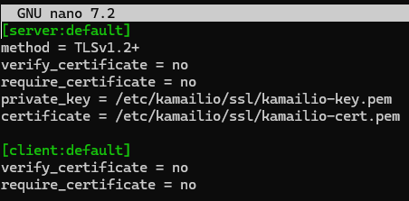
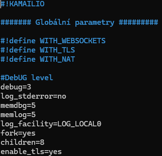
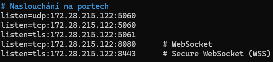
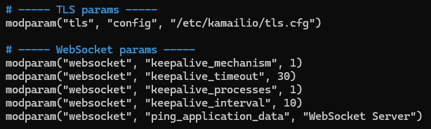
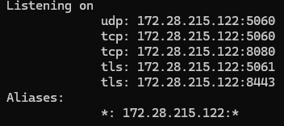
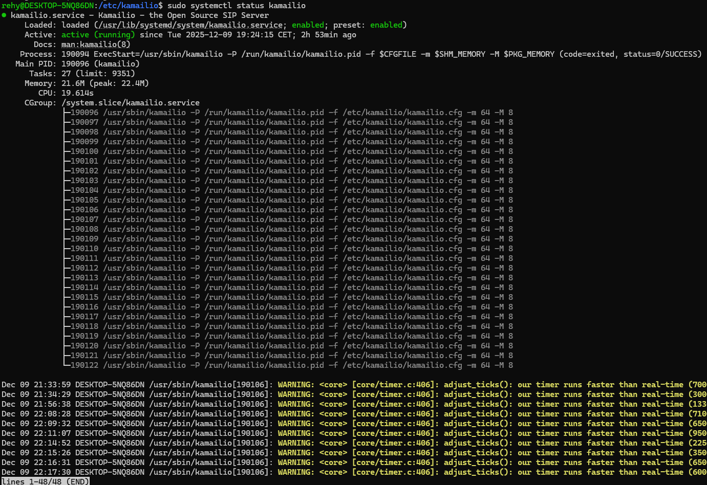
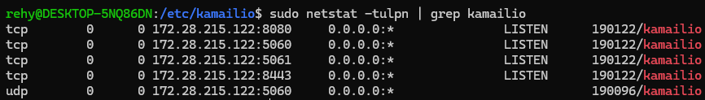

Kamailio WebSocket
Instalace Kamailio a potřebných modulů
- kamailio
- kamailio-websocket-modules
- kamailio-tls-modules
- kamailio-extra-modules
sudo apt-get update
sudo apt-get install kamailio kamailio-websocket-modules kamailio-tls-modules kamailio-extra-modules
Zjištění IP adresy serveru
ip addr show
Vytvoření SSL certifikátů
sudo mkdir -p /etc/kamailio/ssl
cd /etc/kamailio/ssl
Generování private key:
sudo openssl genrsa -out kamailio-key.pem 2048
Generování certifikátu:
sudo openssl req -new -x509 -key kamailio-key.pem -out kamailio-cert.pem -days 365 -subj "/CN=172.28.215.122"
Nastavení oprávnění k souborům:
sudo chmod 600 kamailio-key.pem
sudo chmod 644 kamailio-cert.pem
Vytvoření TLS konfigurační souboru
Vytvoření souboru:
sudo nano /etc/kamailio/tls.cfg
Obsah souboru tls.cfg:
Konfigurace hlavního souboru kamailio.cfg
Otevření souboru:
sudo nano /etc/kamailio/kamailio.cfg
Struktura konfiguračního souboru:
1. Globální parametry (začátek souboru):
2. Nastavení portů (listen direktivy):
3. Načítání modulů (loadmodule):
Moduly přidávají funkčnost do Kamailio. Každý modul se musí načíst před použitím:

4. Parametry modulů (modparam):
Každý modul lze konfigurovat pomocí parametrů:
5. Routing logika (request_route):
Toto je "srdce" Kamailio - zde se rozhoduje, jak se zpracují příchozí SIP zprávy:
request_route {
route(REQINIT); # Úvodní kontroly
route(WITHINDLG); # Zpracování dialogů
route(REGISTRAR); # Registrace uživatelů
route(LOCATION); # Vyhledání uživatele
}
6. Event routes pro WebSocket:
event_route[xhttp:request] {
# Zpracování HTTP/WebSocket požadavků
if ($hdr(Upgrade) =~ "websocket") {
ws_handle_handshake();
}
}
Kontrola konfigurace
Příkaz pro kontrolu:
sudo kamailio -c -f /etc/kamailio/kamailio.cfg
Očekávaný výstup při úspěchu:

Listening on
udp: 172.28.215.122:5060
tcp: 172.28.215.122:5060
tcp: 172.28.215.122:8080
Aliases:
*: 172.28.215.122:*
config file ok, exiting...
Poslední řádek "config file ok, exiting..." znamená, že konfigurace je v pořádku.
Spuštění Kamailio
Restart služby:
sudo systemctl restart kamailio
Kontrola stavu:
sudo systemctl status kamailio
Pokud vše bude fungovat:

Active: active (running)
Kontrola portů:
sudo netstat -tulpn | grep kamailio
Mělo by se zobrazit:

tcp 0 0 172.28.215.122:5060 0.0.0.0:* LISTEN PID/kamailio
udp 0 0 172.28.215.122:5060 0.0.0.0:* PID/kamailio
tcp 0 0 172.28.215.122:5061 0.0.0.0:* LISTEN PID/kamailio
tcp 0 0 172.28.215.122:8080 0.0.0.0:* LISTEN PID/kamailio
tcp 0 0 172.28.215.122:8443 0.0.0.0:* LISTEN PID/kamailio
Sledování logů
Příkaz pro sledování logů v reálném čase:
sudo journalctl -u kamailio -f
Zobrazení posledních 50 záznamů:
sudo journalctl -u kamailio -n 50
Vyhledávání chyb v logu:
sudo journalctl -u kamailio | grep -i error
Reference a další zdroje
Oficiální dokumentace Kamailio:
- WebSocket modul dokumentace:
https://www.kamailio.org/docs/modules/6.0.x/modules/websocket.html
Kompletní dokumentace WebSocket modulu včetně všech parametrů a funkcí. - Kamailio WebSocket setup guide:
https://www.kamailio.org/w/2012/07/websockets/
Oficiální průvodce nastavením WebSocket v Kamailio. - TLS modul dokumentace:
https://www.kamailio.org/docs/modules/6.0.x/modules/tls.html
Dokumentace TLS modulu pro zabezpečenou komunikaci.
Příklady a návody:
- Configuring Kamailio 4.x WebSocket:
https://nil.uniza.sk/en/configuring-kamailio-4x-websocket/
Praktický průvodce konfigurací WebSocket s příklady. - Kamailio mailing list - WebSocket diskuze:
https://kamailio.org/mailman3/hyperkitty/list/sr-users@lists.kamailio.org/
Diskuzní vlákno s řešením běžných problémů s WebSocket.